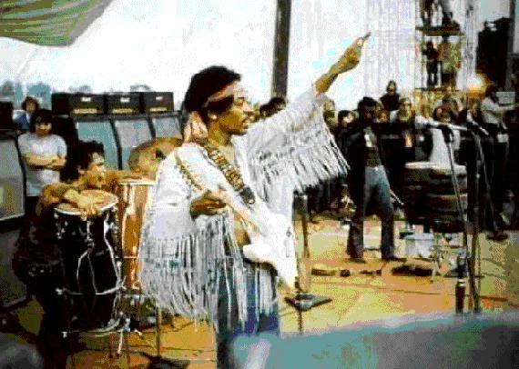

CASC-J2
The 2nd IJCAR ATP System Competition

History
Aims and Motivations
CASC-J2
Divisions
Entrants
Results
Winner presentations
Waldmeister 704 - Thomas Hillenbrand
DCTP 10.21p - Gernot Stenz
Darwin CASC-J2 - Alex Fuchs
Nothing from SAT
Vampire 7.0 - Alexandre Riazanov
Conclusion
Thanks